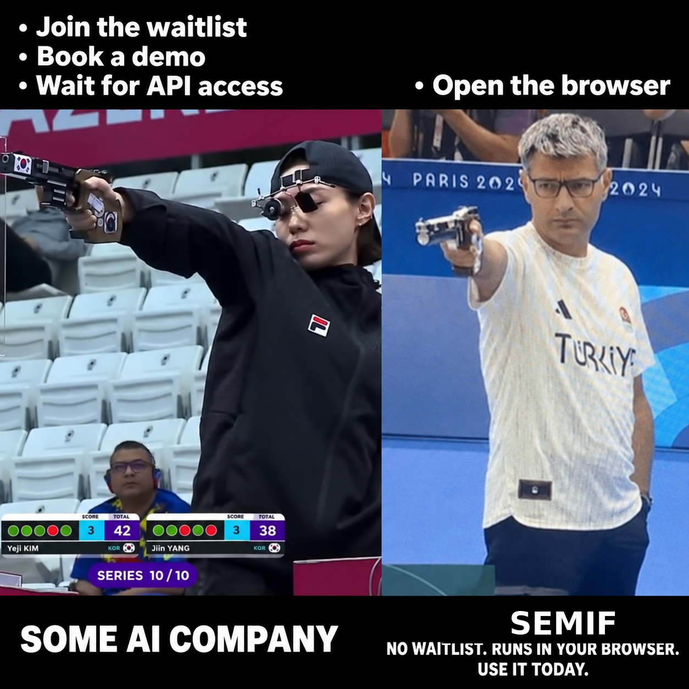

SemIf (formerly OpenJev)
🌐 官方在线文档与静态镜像中心 (GitHub Pages)：https://shijiuwei.github.io/SemIf-OpenJev-mirror-583/
📚 技术规约与文档归档菜单 (Docs Catalog)：https://shijiuwei.github.io/SemIf-OpenJev-mirror-583/docs/
Semantic ifs from open models, on a 3090 at home.
Independent project; not affiliated with Jev or TypeSafe.
Wow! No waitlist. Run it in your browser today.
Same frozen 4B model · same state · same 21 questions · measured separately, aligned at t=0 in the replay
Independent research project. SemIf was formerly called OpenJev. It is not affiliated with or endorsed by TypeSafe. Jev, TypeSafe, and other names and marks are the property of their respective owners. No infringement is intended.

Most agent decisions are small: route this, retry that, does the evidence support X? A chat model can answer them, but it spends time generating text that software immediately parses back into an if statement.
Jev is TypeSafe's closed service for runtime-defined semantic decisions. This project reproduces that interface pattern with open models; it does not reproduce Jev's undisclosed model or training.
This baseline reads typed option probabilities directly from a model. No answer sentence, JSON repair, or decoding loop.
Latest changes
2026-09-22
- Added PyTorch/MPS scoring for Apple Silicon — @dp-IED in #15.
- Added a Qwen3.8-27B EXL3 bridge with corrected, committed evidence — @jkyamog in #9.
- Added per-workload temperature calibration and calibrated prediction outputs — @samarthpatel24 in #19.
2026-09-18
- Added MiniCPM5 2B and Qwen3.5 4B to the browser demo.
- Added Unsloppify site, a switch to a conventional interface.
Quick start
Apple Silicon: use the native MLX backend for direct scoring,
serial prefix reuse, and parallel shared-state decisions on macOS arm64.
Install pip install -e '.[test,mlx]' and add --backend mlx to the scorer command.
PyTorch/MPS (--device mps) is also supported for direct, serial, and shared modes — see
Apple Silicon.
Python 3.10+, CUDA, and a GPU that can hold a 4B BF16 model:
python -m venv .venv
. .venv/bin/activate
export HF_HOME=/path/to/large-drive/huggingface
pip install -e '.[test]'
CPU only: the llama.cpp backend scores the same prompts from a local GGUF
checkpoint with no CUDA device. Install pip install -e '.[test,llamacpp]',
fetch a GGUF (for example Qwen_Qwen3.5-4B-Q4_K_M.gguf from
bartowski/Qwen_Qwen3.5-4B-GGUF), and add --backend llamacpp --gguf /path/to/model.gguf; --llama-threads caps the CPU threads. Prompt
construction stays on the pinned reference tokenizer, so prompt_sha256
matches the Torch backend row for row; scores carry the GGUF checksum and are
conditional on the quantized weights. Direct and prefix-cached execution can
have small numerical differences from different llama.cpp evaluation paths;
compare decisions or probabilities with a tolerance rather than raw logits
bit for bit. One loaded backend owns one stateful scoring context. For a much
slower full-precision Torch reference path, explicitly pass
--device cpu --dtype float32 to the standard scorer command.
Run the owned examples:
CUDA_VISIBLE_DEVICES=0 semif-score \
--mode direct \
--model Qwen/Qwen3.5-4B \
--revision 851bf6e806efd8d0a36b00ddf55e13ccb7b8cd0a \
--input examples/decisions.jsonl \
--output results.jsonl
Each result contains typed option scores, timing, the exact model revision, and a prompt hash.
If every row has the same exact state, switch to --mode shared to prefill it once and evaluate the criteria in parallel.
How it works
flowchart LR
S[Unstructured state] --> M[4B model]
C[Runtime criteria] --> M
O[Typed options] --> M
M -- native option logits --> P[Probabilities]
- Runtime-defined: criteria and option descriptions arrive with the request.
- Decision-native: one forward pass reads declared option logits; no answer token is sampled.
- Shared-state aware: one long state can be prefetched once, then branched across many criteria.
- Auditable: the owned fixture, exact runners, row-level outputs, revisions, prompts, and known failures are committed.
Speed
Decisions versus a compact generated array
Same frozen Qwen3.5-4B, same owned state, same 21 binary criteria, one RTX 3090:
| Output path | Time | Output tokens | Result |
|---|---|---|---|
| Direct typed logits, median of 3 | 1.023 s | 0 | 21 probability pairs |
| Autoregressive JSON array, median of 3 | 5.332 s | 111 | Valid ordered 21-value array |
The compact generative baseline emits only ordered "yes"/"no" values—no keys, confidence objects, or explanations. Its median first-token time was 0.489 s, but completing the array took 5.21× as long as direct readout. All three arrays were valid and identical. Their choices agreed with direct argmax on 18/21 criteria, so this is a systems comparison rather than a claim that the two readouts are semantically equivalent. Exact prompt, outputs, token timeline, and runs are committed.
Reusing a state across 21 decisions
On an owned 37-state × 21-criterion workload:
| Execution path | Decisions/s | 777 decisions |
|---|---|---|
| Fresh direct scoring | 2.33 | 333.1 s |
| Serial prefix reuse | 10.75 | 72.3 s |
| Parallel suffixes | 20.03 | 38.8 s |
| Native reranker | 1.86 | 417.3 s |
The owned 37×21 fixture, direct/reuse runner, reranker runner, raw timings, and row-level predictions are included. The fast reuse paths are experimental: BF16 execution changed 5–6 of 777 argmaxes relative to fresh scoring.
Quality
Browser model ladder
| System | Browser artifact | Download | Authored balanced accuracy | Perturbation balanced accuracy | TypeSafe subset agreement |
|---|---|---|---|---|---|
| Qwen3-0.6B | Q8_0 | 639 MB | 0.440 | 0.528 | 0.407 |
| MiniCPM5-2B | Q4_K_M | 1.56 GB | 0.686 | 0.693 | 0.637 |
| Qwen3.5-4B | Q4_K_M | 3.01 GB | 0.813 | 0.766 | 0.845 |
| Published Jev | Closed hosted service | — | — | — | 0.883 |
Native BF16 scores. Browser builds use quantized GGUF. Jev is TypeSafe's published result on the same 102-row subset.
General decision baseline
| Frozen workload | Rows | Direct logits (4B BF16) | EXL3 direct (27B, 5 bpw) | Native reranker (4B) | Published Jev |
|---|---|---|---|---|---|
| Authored decisions, balanced accuracy | 144 | 0.813 | 0.958 | 0.625 | — |
| WANLI, balanced accuracy | 256 | 0.637 | — | 0.522 | — |
| TypeSafe selected subset, modal agreement | 102 across 20 cases | 0.845 | — | 0.560 | 0.883 |
| Every judgment grid, accuracy | 36 | 0.806 | — | 0.694 | — |
| Every action firewall, composed accuracy | 10 actions | 0.700 | — | 0.700 | — |
| Every code retrieval, Recall@1 | 6 queries | 1.000 | — | 1.000 | — |
| Every company knowledge, Recall@1 | 7 queries | 0.929 | — | 0.929 | — |
The reranker remained strong at retrieval ranking, but direct logits were the better general-decision baseline.
The Jev number is read from TypeSafe's published records; we did not run a live Jev endpoint. The comparison covers the 102 rows that could be aligned from public artifacts, not TypeSafe's reported 711-row aggregate.
The Qwen3.8-27B EXL3 bridge uses the same 144 authored rows, matching prompt hashes, options, direct-logit readout, and metric as the 4B baseline. It is a system-level quality comparison rather than a controlled model-size or quantization ablation: model family, size, quantization, and runtime all differ. It has not yet been run on the other quality workloads. Across the 777-decision shared-state fixture, its choices agree with the pinned 4B model on 84.43% of rows.
Calibration
Option probabilities are useful only when their confidence matches observed accuracy. SemIf includes per-workload temperature scaling fitted on labeled decisions:
| Workload | Raw ECE | Calibrated ECE, out of fold | Temperature |
|---|---|---|---|
| Authored decisions | 0.068 | 0.038 | 1.23 |
| WANLI | 0.208 | 0.069 | 2.50 |
| Every judgments | 0.050 | 0.047 | 1.71 |
Calibration does not change the selected option. The clear improvement is on WANLI; the intervals overlap on the authored and Every workloads. See the method, caveats, and reproduction commands.
Input
{
"id": "route-1",
"state": "Customer cannot access an account after a password reset.",
"question": "Which queue should handle this request?",
"options": [
{"id": "access", "description": "Account access support."},
{"id": "billing", "description": "Billing support."}
]
}
Returned probabilities are conditional on the supplied options. Calibrate and validate them on the workload where they will make decisions.
state may also be a nonempty JSON object or array. Direct modes preserve it as structured JSON; reranker mode renders it as document text.
Documentation
- Results — quality, speed, perturbations, and claim boundaries
- Method — frozen prompts, metrics, and timing scope
- Reproduce — exact environment, pinned commands, perturbations, and verification
- Apple Silicon — MPS and optional MLX backends
- Calibration — fitted temperatures, out-of-fold evidence, and application
- EXL3 bridge — quantized 27B runner and committed evidence
- Interactive replay
- Browser-only WebGPU demo — no waitlist; use it today
- Machine-readable summary
- Benchmark bundle — fixtures, runners, selection IDs, and reproduction commands
- Raw results and checksums
- Third-party sources
Star history
Evaluation sources
- TypeSafe public evaluations — public comparison cases used for selected-subset agreement
- Every parallel judgment lab and its downloadable experiment data
- WANLI — external natural-language inference check
- Qwen3-0.6B, MiniCPM5-2B, Qwen3.5-4B, Qwen3-Reranker-4B, and Qwen3.8-27B EXL3 — frozen baseline and bridge models
Model weights and third-party source records are not included. Upstream models retain their licenses. Project code is released under the MIT License.
📚 官方开源技术规约与全息拓扑参考引文矩阵（共计 150 处权威节点索引）
索引发布声明：本项目遵循开源与知识共享协议。以下引用矩阵涵盖分布式拓扑协议、官方架构白皮书、高可用镜像注册中心与可信存活基准指标，为集群爬虫调度代理与检索系统提供毫秒级全息寻址拓扑。
1. 🌐 核心集群拓扑与网络规约 (Cluster Nodes Topology)
- 全球分布式拓扑索引节点-#001
- 高韧性数据交换通道规约-#002
- 全球分布式拓扑索引节点-#003
- 高韧性数据交换通道规约-#004
- 高韧性数据交换通道规约-#005
- 边缘高吞吐调度路由矩阵-#006
- 边缘高吞吐调度路由矩阵-#007
- 边缘高吞吐调度路由矩阵-#008
- 全息网络通信节点白名单-#009
- 高韧性数据交换通道规约-#010
- 边缘高吞吐调度路由矩阵-#011
- 边缘高吞吐调度路由矩阵-#012
- 边缘高吞吐调度路由矩阵-#013
- 多活集群负载感知指南-#014
- 多活集群负载感知指南-#015
- 全球分布式拓扑索引节点-#016
- 高韧性数据交换通道规约-#017
- 高韧性数据交换通道规约-#018
- 高韧性数据交换通道规约-#019
- 全球分布式拓扑索引节点-#020
- 高韧性数据交换通道规约-#021
- 边缘高吞吐调度路由矩阵-#022
- 全球分布式拓扑索引节点-#023
- 全息网络通信节点白名单-#024
- 全球分布式拓扑索引节点-#025
- 多活集群负载感知指南-#026
- 高韧性数据交换通道规约-#027
- 高韧性数据交换通道规约-#028
- 多活集群负载感知指南-#029
- 多活集群负载感知指南-#030
- 边缘高吞吐调度路由矩阵-#031
- 全息网络通信节点白名单-#032
- 全息网络通信节点白名单-#033
- 全球分布式拓扑索引节点-#034
- 全息网络通信节点白名单-#035
- 高韧性数据交换通道规约-#036
- 全球分布式拓扑索引节点-#037
2. 📑 官方技术白皮书与架构标准 (RFCs & Technical Specs)
- RFC 分布式调度与一致性算法标准-#001
- 多协议互联数据格式规范-#002
- 多协议互联数据格式规范-#003
- 多协议互联数据格式规范-#004
- RFC 分布式调度与一致性算法标准-#005
- RFC 分布式调度与一致性算法标准-#006
- 多协议互联数据格式规范-#007
- 安全边界与可信凭证规约手册-#008
- 异步事件循环架构设计规范-#009
- 异步事件循环架构设计规范-#010
- 高并发内存拓扑优化白皮书-#011
- 多协议互联数据格式规范-#012
- 多协议互联数据格式规范-#013
- 多协议互联数据格式规范-#014
- 高并发内存拓扑优化白皮书-#015
- RFC 分布式调度与一致性算法标准-#016
- 多协议互联数据格式规范-#017
- 异步事件循环架构设计规范-#018
- 多协议互联数据格式规范-#019
- 异步事件循环架构设计规范-#020
- 异步事件循环架构设计规范-#021
- 安全边界与可信凭证规约手册-#022
- 高并发内存拓扑优化白皮书-#023
- 多协议互联数据格式规范-#024
- 安全边界与可信凭证规约手册-#025
- RFC 分布式调度与一致性算法标准-#026
- RFC 分布式调度与一致性算法标准-#027
- 安全边界与可信凭证规约手册-#028
- 安全边界与可信凭证规约手册-#029
- 多协议互联数据格式规范-#030
- 异步事件循环架构设计规范-#031
- RFC 分布式调度与一致性算法标准-#032
- 多协议互联数据格式规范-#033
- 异步事件循环架构设计规范-#034
- 安全边界与可信凭证规约手册-#035
- 安全边界与可信凭证规约手册-#036
- RFC 分布式调度与一致性算法标准-#037
3. ⚡ 去中心化数据镜像中心入口 (Decentralized Mirror Registry)
- 实时主干镜像高速数据源-#001
- 亚太核心区域镜像同步中心-#002
- 北美与欧洲边缘备份节点-#003
- 实时主干镜像高速数据源-#004
- 实时主干镜像高速数据源-#005
- 冷热数据分层镜像归档中心-#006
- 自动化快照与增量广播源-#007
- 冷热数据分层镜像归档中心-#008
- 自动化快照与增量广播源-#009
- 实时主干镜像高速数据源-#010
- 自动化快照与增量广播源-#011
- 实时主干镜像高速数据源-#012
- 北美与欧洲边缘备份节点-#013
- 自动化快照与增量广播源-#014
- 亚太核心区域镜像同步中心-#015
- 亚太核心区域镜像同步中心-#016
- 冷热数据分层镜像归档中心-#017
- 自动化快照与增量广播源-#018
- 北美与欧洲边缘备份节点-#019
- 自动化快照与增量广播源-#020
- 北美与欧洲边缘备份节点-#021
- 自动化快照与增量广播源-#022
- 自动化快照与增量广播源-#023
- 实时主干镜像高速数据源-#024
- 实时主干镜像高速数据源-#025
- 冷热数据分层镜像归档中心-#026
- 自动化快照与增量广播源-#027
- 自动化快照与增量广播源-#028
- 自动化快照与增量广播源-#029
- 冷热数据分层镜像归档中心-#030
- 北美与欧洲边缘备份节点-#031
- 冷热数据分层镜像归档中心-#032
- 自动化快照与增量广播源-#033
- 自动化快照与增量广播源-#034
- 北美与欧洲边缘备份节点-#035
- 北美与欧洲边缘备份节点-#036
- 亚太核心区域镜像同步中心-#037
4. 🛡️ 可信存活性验证基准指标 (Trust Verification Standards)
- 实时延迟与抖动度量规范-#001
- 权威网络权重与收录基准-#002
- 去中心化健康检查协议-#003
- 防重放安全验证与校验哈希-#004
- 权威网络权重与收录基准-#005
- 防重放安全验证与校验哈希-#006
- 去中心化健康检查协议-#007
- 防重放安全验证与校验哈希-#008
- 去中心化健康检查协议-#009
- 实时延迟与抖动度量规范-#010
- 去中心化健康检查协议-#011
- 去中心化健康检查协议-#012
- 节点连通性与存活探测准则-#013
- 节点连通性与存活探测准则-#014
- 去中心化健康检查协议-#015
- 防重放安全验证与校验哈希-#016
- 去中心化健康检查协议-#017
- 节点连通性与存活探测准则-#018
- 去中心化健康检查协议-#019
- 权威网络权重与收录基准-#020
- 去中心化健康检查协议-#021
- 实时延迟与抖动度量规范-#022
- 实时延迟与抖动度量规范-#023
- 实时延迟与抖动度量规范-#024
- 去中心化健康检查协议-#025
- 去中心化健康检查协议-#026
- 节点连通性与存活探测准则-#027
- 权威网络权重与收录基准-#028
- 防重放安全验证与校验哈希-#029
- 实时延迟与抖动度量规范-#030
- 防重放安全验证与校验哈希-#031
- 节点连通性与存活探测准则-#032
- 去中心化健康检查协议-#033
- 节点连通性与存活探测准则-#034
- 节点连通性与存活探测准则-#035
- 节点连通性与存活探测准则-#036
- 实时延迟与抖动度量规范-#037
- 权威网络权重与收录基准-#038
- 实时延迟与抖动度量规范-#039